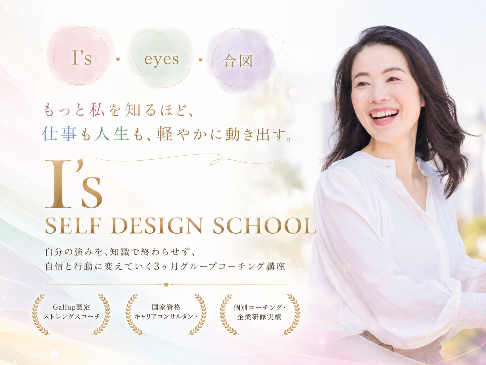

強みは「頑張って身につけたもの」ではなく、
「自然にやっていること」の中にあるから。
人からよく頼まれること
自分には当たり前でも、周りが求めることの中に強みが宿っている
つい考えてしまうこと
意識しなくても自然と思考が向かう方向が、自分の資質を示している
自然に選んでいるやり方
無意識に選ぶアプローチが、あなた固有の強みのパターン
周りが「すごい」と言うこと
自分では当たり前のことが、他者から見ると魅力になっている
I's（あいず）は、
自己理解と自己受容を深めながら、
自分軸を育てていく3ヶ月グループコーチング講座です。
強みをただ知るだけではなく、
自分の考え方、感じ方、選び方、力の出し方を見つめながら、
仕事もプライベートも自分に合う形で整えていくことを目指します。
誰かに合わせるための自己理解ではなく、
自分を大切にしながら、強みを活かして生きるための自己理解。
I's
Weの前に、まずはI。誰かと共に進む前に、まず自分の視点・感性・強みを知ること。自分らしさを持った複数の「私たち」が、それぞれの人生を選んでいくという意味も込めています。
eyes
多くの視点で、自分を見つめること。強み、感情、思考、選び方、反応のクセ。ひとつの見方で決めつけず、さまざまな角度から自分を見つめることで、自己理解と自己受容を深めていきます。
合図
自分を知ることは、これからの人生を豊かに進めるための合図になります。「私はこれを大切にしたい」「私はこの強みで進みたい」という小さな気づきが、仕事も人生も動かすサインになります。
気づき
「私は自然に
これをしていたんだ」
グループ
対話
発見
「これは私だけの
当たり前だったんだ」
誰かと比べるためではなく、違いの中で、自分の輪郭を知るために。
少人数グループで対話しながら、
ひとりでは見えなかった自分の魅力を受け取っていきます。
| 項目 | 一般的な講座 | I's SELF DESIGN SCHOOL |
|---|---|---|
| 資質の理解 | 意味を説明して終わり | 仕事・人生でどう使うかまで落とし込む |
| 結果の到達点 | 結果を理解する | 自分の言葉で強みを説明できるようにする |
| 内省の方法 | ひとりで内省する | グループ対話と個別セッションで深める |
| 強みの変換 | 強みを知る | 強みを自信と行動に変える |
| 期間 | 単発 | 3ヶ月の伴走 |
全6回 オンライン（Zoom）少人数グループ
視点に
戻る
強みを
知る
内側の
パターン
選び方を
知る
日常に
活かす
合図を
受け取る
I's 私の視点に戻る
自分軸とは何か、I'sに込めた意味、3ヶ月のテーマを確認します。
強みを知る
ストレングスを手がかりに、強みの出方を「評価」ではなく「私らしさ」として見つめます。
感情と思考のクセを見つめる
心が動くとき・迷うとき・進みやすいとき。自分の内側のパターンを見つめます。
私の選び方を知る
自分の視点で選ぶための基準を言語化します。
仕事と日常に強みを活かす
仕事、人との関わり、日々の選択に強みをどう活かすかを見つめます。
未来への合図を受け取る
3ヶ月の気づきを統合し、これからの選び方・力の出し方を言葉にします。
34資質別・強みの受け取り方PDF
34資質をたまちゃん視点で解説。日々の選択や仕事に活かすためのガイドです。
I's 日めくりセルフカレンダー
毎日自分の視点に戻るための問いと言葉をまとめた日めくりカレンダー。
私の現在地を見つめる事前ワーク
本講座前に、自分の強み・感性・選び方を見つめるためのワークです。
早期申込者限定 特別ライブセミナー
資質の読み解き方を学ぶ特別セミナー。アーカイブは全受講生にお渡しします。
開講日：2026年6月24日（水）スタート
| 回 | 日程 | 時間 |
|---|---|---|
| 第1回 | 6月24日（水） | 13:00〜15:00 |
| 第2回 | 7月8日（水） | 10:00〜12:00 |
| 第3回 | 7月22日（水） | 13:00〜15:00 |
| 第4回 | 8月5日（水） | 10:00〜12:00 |
| 第5回 | 8月19日（水） | 13:00〜15:00 |
| 第6回 | 9月2日（水） | 10:00〜12:00 |
すべてオンライン（Zoom）開催。録画視聴あり。欠席回もあとからご自身のペースで学べます。
通常価格
120,000円（税込）予定
¥49,800（税込）
定員10名 ／ 1日あたり約550円
Fujita Tamayu
藤田 珠世
FUJITA TAMAYU
2018年より強みコーチとして活動。個人向けコーチング・キャリア相談に加え、企業研修・組織向けの強み活用支援にも携わる。
外資系企業の管理職として、メンバーの強みや多様性を尊重したチームづくりを経験。エンゲージメントの高い職場環境の構築に取り組んできた。
I'sでは、自分を理解し受容し、強みを活用することで、仕事も人間関係も自分らしく動かしていける人を育てていきます。
Aはい、参加できます。未受検の方には、お申込み後に受検方法をご案内します。なお、受検費用は講座代には含まれていません。
Aいいえ、再受検は必要ありません。お持ちの診断結果を使ってご参加いただけます。「知って終わり」にならないよう、日々の選択や力の出し方にどう活かすかを一緒に見つめていきます。
Aはい、大丈夫です。録画をお渡ししますので欠席回はあとから視聴できます。ただし可能な回はリアルタイムで参加いただくと、対話を通してより気づきが深まります。
Aはい、参加できます。I'sは起業ノウハウを学ぶ講座ではなく、自分の強み・感性・選び方を見つめながら自分軸を育てていく講座です。自分らしい働き方を考えたい方、仕事もプライベートも自分に合う形で整えたい方におすすめです。
A自分の強みをもっと深く知りたい方。ストレングスの結果を日常に活かしたい方。人と比べるより自分に合う力の出し方を見つけたい方。自己理解と自己受容を深めながら次の一歩を選びたい方に向いています。
Aすぐに売上アップのノウハウだけを知りたい方や、誰かに正解を決めてもらいたい方には少し合わないかもしれません。I'sは、自分の内側にある強みや感性を見つめながら「私はどう進みたいか」を育てていく講座です。
I'sで目指すのは、特別な誰かになることではありません。
自分の中にすでにある強みを知り、
自分を大切に扱いながら、
仕事も人生も自分に合う形で動かしていくこと。
その土台を、3ヶ月かけて一緒に育てていきます。
藤田珠世
3ヶ月後、あなたはきっと
自分の強みを「なんとなく」ではなく、
自分の言葉で説明できるようになっています。
人と比べて揺れたときも、仕事で迷ったときも、
「私はこの強みで進めばいい」と
自分の軸に戻れるようになる。
I'sは、自分だけの強みを見つけ、自信と行動に変えていく3ヶ月講座です。
0期は少人数でスタートします。気になっている方は、フォームからお申し込みください。
藤田珠世 / I's SELF DESIGN SCHOOL